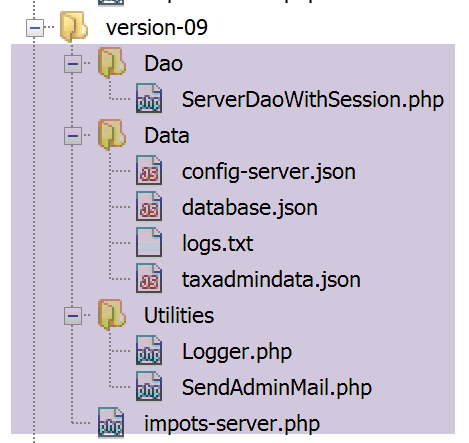
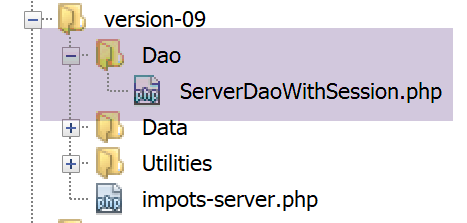
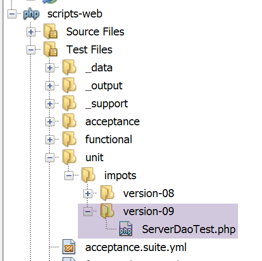
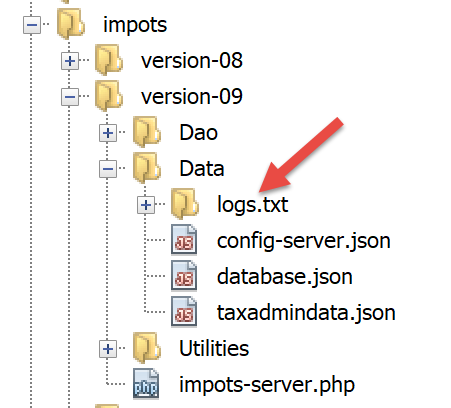

19. Exercício prático – versão 9
Nesta versão, vamos melhorar o servidor da seguinte forma:
- atualmente, em cada pedido, os dados da administração fiscal são consultados na base de dados. Vamos utilizar uma sessão:
- na primeira solicitação de um utilizador, os dados da administração fiscal são consultados na base de dados e colocados na sessão;
- nas solicitações seguintes do mesmo utilizador, os dados da administração fiscal são recuperados da sessão. É de esperar uma ligeira redução no tempo de execução, uma vez que as consultas à base de dados são dispendiosas;
- o servidor irá registar num ficheiro de texto os momentos importantes:
- a autenticação bem-sucedida ou falhada;
- a validade ou não dos parâmetros enviados pelo cliente;
- o resultado do cálculo do imposto;
- os diferentes casos de erro;
- em caso de erro fatal, será enviado um e-mail ao administrador da aplicação;
O cliente também terá de ser alterado para gerir o cookie de sessão que lhe iremos enviar.
19.1. O servidor
Vamos centrar-nos na parte do servidor da aplicação.

Esta arquitetura será implementada pelos seguintes scripts:

19.1.1. Utilitários

19.1.1.1. A classe [Logger]
A classe [Logger] será utilizada para gravar registos num ficheiro de texto:
<?php
namespace Application;
class Logger {
// atributo
private $resource;
// construtor
public function __construct(string $logsFilename) {
// abertura do ficheiro
$this->resource = fopen($logsFilename, "a");
if (!$this->resource) {
throw new ExceptionImpots("Echec lors de la création du fichier de logs [$logsFilename]");
}
}
// gravação de uma mensagem nos registos
public function write(string $message) {
fputs($this->resource, (new \DateTime())->format("d/m/y H:i:s:v") . " : $message");
}
// fecho do ficheiro de registos
public function close() {
fclose($this->resource);
}
}
Comentários
- linha 7: o recurso do ficheiro de registos;
- linha 10: o construtor da classe recebe como parâmetro o nome do ficheiro de registos;
- linha 12: abre-se o ficheiro de texto no modo de adição (a+): o ficheiro será aberto e o seu conteúdo preservado. As gravações serão feitas a seguir ao conteúdo atual;
- linhas 13-15: se não for possível abrir o ficheiro, é lançada uma exceção;
- linhas 19-21: o método [write] permite escrever a mensagem [$message] no ficheiro de registos, precedida da data e da hora;
- linhas 24-16: o método [close] permite fechar o ficheiro de registos;
Nota: a aplicação do servidor pode servir vários clientes em simultâneo. No entanto, existe apenas um ficheiro de registos para todos. Existe, portanto, o risco de acessos simultâneos para escrever no ficheiro. Seria, assim, necessário sincronizar as gravações para evitar que estas se misturem. Para tal, a classe PHP dispõe de semáforos [https://www.php.net/manual/fr/book.sem.php]. Ignoraremos aqui a sincronização das gravações, mas é importante estar ciente do problema.
19.1.1.2. A classe [SendAdminMail]
A classe [SendAdminMail] permite enviar um e-mail ao administrador da aplicação em caso de falha da mesma:
<?php
namespace Application;
class SendAdminMail {
// atributos
private $config;
private $logger;
// construtor
public function __construct(array $config, Logger $logger = NULL) {
$this->config = $config;
$this->logger = $logger;
}
public function send() {
// envia $this->config['message'] para o servidor SMTP $this->config['smtp-server'] na porta $infos[smt-port]
// se $this->config['tls'] for verdadeiro, será utilizado o suporte TLS
// o e-mail é enviado em nome de $this->config['from']
// para o destinatário $this->config['to']
// a mensagem tem como assunto $this->config['subject']
// são anexados ao e-mail os anexos de $this->config['attachments']
// o resultado do método
try {
// criação da mensagem
$message = (new \Swift_Message())
// assunto da mensagem
->setSubject($this->config["subject"])
// remetente
->setFrom($this->config["from"])
// destinatários com um dicionário (setTo/setCc/setBcc)
->setTo($this->config["to"])
// texto da mensagem
->setBody($this->config["message"])
;
// anexos
foreach ($this->config["attachments"] as $attachment) {
// caminho do anexo
$fileName = __DIR__ . $attachment;
// verifica-se se o ficheiro existe
if (file_exists($fileName)) {
// anexamos o documento à mensagem
$message->attach(\Swift_Attachment::fromPath($fileName));
} else {
if ($this->logger !== NULL) {
// erro
$this->logger->write("L'attachement [$fileName] n'existe pas\n");
}
}
}
// protocolo TLS?
if ($this->config["tls"] === "TRUE") {
// TLS
$transport = (new \Swift_SmtpTransport($this->config["smtp-server"], $this->config["smtp-port"], 'tls'))
->setUsername($this->config["user"])
->setPassword($this->config["password"]);
} else {
// sem TLS
$transport = (new \Swift_SmtpTransport($this->config["smtp-server"], $this->config["smtp-port"]));
}
// o gestor do envio
$mailer = new \Swift_Mailer($transport);
// envio da mensagem
$mailer->send($message);
// fim
if ($this->logger !== NULL) {
$this->logger->write("Message [{$this->config["message"]}] envoyé à {$this->config["to"]}\n");
}
} catch (\Throwable $ex) {
// erro
if ($this->logger !== NULL) {
$this->logger->write("Erreur lors de l'envoi du message [{$this->config["message"]}] à {$this->config["to"]}\n");
}
}
}
}
Comentários
- linha 11: o construtor recebe dois parâmetros:
- [$config]: um tabuleiro associativo que contém todas as informações necessárias para o envio do e-mail;
- [$logger]: um logger que permite registar os momentos importantes do envio do e-mail;
O tabuleiro associativo terá o seguinte formato:
- linhas 16-76: o método [send] permite enviar o e-mail. Este código foi apresentado e descrito no parágrafo com o link;
19.1.2. A camada [dao]

O script [ServeurDaoWithSession.php] é o seguinte:
<?php
// espaço de nomes
namespace Application;
// definição de uma classe ImpotsWithDataInDatabase
class ServerDaoWithSession extends ServerDao {
// construtor
public function __construct(string $databaseFilename = NULL, TaxAdminData $taxAdminData = NULL) {
// o caso mais simples
if ($taxAdminData !== NULL) {
$this->taxAdminData = $taxAdminData;
} else {
// passa-se o controlo para a classe pai
parent::__construct($databaseFilename);
}
}
}
Comentários
- linha 7: a classe [ServerDaoWithSession] da versão 09 estende a classe [ServerDao] da versão 08. Com efeito, a classe [ServerDao] sabe utilizar a base de dados. Resta-nos apenas prever o caso em que os dados da administração fiscal já tenham sido obtidos:
- linha 10: o construtor recebe agora dois parâmetros:
- [string $databaseFilename]: nome do ficheiro que contém as informações necessárias para estabelecer ligação à base de dados, caso os dados da administração fiscal ainda não tenham sido obtidos; NULL, caso contrário;
- [TaxAdminData $taxAdminData]: os dados da administração fiscal, caso já tenham sido obtidos; NULL, caso contrário;
Ao iniciar uma sessão web, a camada [dao] será construída com um objeto [$databaseFilename] que não seja NULL e um objeto [taxAdminData] NULL. Os dados da administração fiscal serão então pesquisados na base de dados e armazenados na sessão. Nas consultas posteriores da mesma sessão, a camada [dao] será construída com um objeto [databaseFilename], NULL e um objeto [taxAdminData] provenientes da sessão, e não com o NULL. Portanto, não haverá pesquisa na base de dados.
19.1.3. O script do servidor
O script do servidor [impots-server.php] é configurado pelo seguinte ficheiro jSON [config-server.json]:
{
"rootDirectory": "C:/myprograms/laragon-lite/www/php7/scripts-web/impots/version-09",
"databaseFilename": "Data/database.json",
"relativeDependencies": [
"/../version-08/Entities/BaseEntity.php",
"/../version-08/Entities/ExceptionImpots.php",
"/../version-08/Entities/TaxAdminData.php",
"/../version-08/Entities/Database.php",
"/../version-08/Dao/InterfaceServerDao.php",
"/../version-08/Dao/ServerDao.php",
"/Dao/ServerDaoWithSession.php",
"/../version-08/Métier/InterfaceServerMetier.php",
"/../version-08/Métier/ServerMetier.php",
"/Utilities/Logger.php",
"/Utilities/SendAdminMail.php"
],
"absoluteDependencies": ["C:/myprograms/laragon-lite/www/vendor/autoload.php"],
"users": [
{
"login": "admin",
"passwd": "admin"
}
],
"adminMail": {
"smtp-server": "localhost",
"smtp-port": "25",
"from": "guest@localhost",
"to": "guest@localhost",
"subject": "plantage du serveur de calcul d'impôts",
"tls": "FALSE",
"attachments": []
},
"logsFilename": "Data/logs.txt"
}
O script do servidor [impots-server.php] evolui da seguinte forma:
<?php
// respeito estrito pelos tipos declarados dos parâmetros das funções
declare (strict_types=1);
// espaço de nomes
namespace Application;
// gestão de erros por PHP
ini_set("display_errors", "0");
//
// caminho do ficheiro de configuração
define("CONFIG_FILENAME", "Data/config-server.json");
// recuperar a configuração
$config = \json_decode(file_get_contents(CONFIG_FILENAME), true);
// inclui-se as dependências necessárias para o script
$rootDirectory = $config["rootDirectory"];
foreach ($config["relativeDependencies"] as $dependency) {
require "$rootDirectory$dependency";
}
// dependências absolutas (bibliotecas de terceiros)
foreach ($config["absoluteDependencies"] as $dependency) {
require "$dependency";
}
//
// dependências do Symfony
use \Symfony\Component\HttpFoundation\Response;
use \Symfony\Component\HttpFoundation\Request;
use \Symfony\Component\HttpFoundation\Session\Session;
// sessão
$session = new Session();
$session->start();
// preparação da resposta JSON do servidor
$response = new Response();
$response->headers->set("content-type", "application/json");
$response->setCharset("utf-8");
// criação do ficheiro de registos
try {
$logger = new Logger($config['logsFilename']);
} catch (ExceptionImpots $ex) {
// erro interno do servidor
doInternalServerError($ex->getMessage(), $response, NULL, $config['adminMail']);
// concluído
exit;
}
// 1.º registo
$logger->write("\n---nouvelle requête\n");
// recuperação do pedido atual
$request = Request::createFromGlobals();
// autenticação apenas na primeira vez
if (!$session->has("user")) {
// registo
$logger->write("Autentification en cours…\n");
// autenticação
…
}
// encontrou-se o utilizador?
if (!$trouvé) {
// não encontrado - código 401 HTTP_UNAUTHORIZED
sendResponse(
$response,
["erreur" => "Echec de l'authentification [$requestUser, $requestPassword]"],
Response::HTTP_UNAUTHORIZED,
["WWW-Authenticate" => "Basic realm=" . utf8_decode("\"Serveur de calcul d'impôts\"")],
$logger
);
// concluído
exit;
} else {
// regista-se na sessão que o utilizador foi autenticado
$session->set("user", TRUE);
// registo
$logger->write("Authentification réussie [$requestUser, $requestPassword]\n");
}
} else {
// registo
$logger->write("Authentification prise en session…\n");
}
// temos um utilizador válido — verificamos os parâmetros recebidos
$erreurs = [];
// devemos ter três parâmetros GET
…
// erros?
if ($erreurs) {
// é enviado um código de erro 400 HTTP_BAD_REQUEST ao cliente
sendResponse($response, ["erreurs" => $erreurs], Response::HTTP_BAD_REQUEST, [], $logger);
// concluído
exit;
} else {
// registos
$logger->write("paramètres ['marié'=>$marié, 'enfants'=>$enfants, 'salaire'=>$salaire] valides\n");
}
// Temos tudo o que é necessário para trabalhar
// criação da camada [dao]
if (!$session->has("taxAdminData")) {
// os dados são extraídos da base de dados
$logger->write("données fiscales prises en base de données\n");
try {
// construção da camada [dao]
$dao = new ServerDaoWithSession($config["databaseFilename"], NULL);
// os dados são colocados na sessão
$session->set("taxAdminData", $dao->getTaxAdminData());
} catch (\RuntimeException $ex) {
// regista-se o erro
doInternalServerError(utf8_encode($ex->getMessage()), $response, $logger, $config['adminMail']);
// concluído
exit;
}
} else {
// os dados são recolhidos da sessão
$dao = new ServerDaoWithSession(NULL, $session->get("taxAdminData"));
// registos
$logger->write("données fiscales prises en session\n");
}
// criação da camada [métier]
$métier = new ServerMetier($dao);
// cálculo do imposto
$result = $métier->calculerImpot($marié, (int) $enfants, (int) $salaire);
// a resposta é apresentada
sendResponse($response, $result, Response::HTTP_OK, [], $logger);
// fim
exit;
function doInternalServerError(string $message, Response $response, Logger $logger = NULL, array $infos) {
// envio de um e-mail ao administrador
// SendAdminMail intercepta todas as exceções e regista-as
$infos['message'] = $message;
$sendAdminMail = new SendAdminMail($infos, $logger);
$sendAdminMail->send();
// envia-se um código de erro 500 ao cliente
sendResponse($response, ["erreur" => $message], Response::HTTP_INTERNAL_SERVER_ERROR, [], $logger);
}
// função de envio da resposta HTTP ao cliente
function sendResponse(Response $response, array $result, int $statusCode, array $headers, Logger $logger) {
// $response: resposta HTTP
// $result: tabela de resultados
// $statusCode: estado HTTP da resposta
// $headers: cabeçalhos HTTP a incluir na resposta
// $logger: o logger da aplicação
//
// estado HTTTP
$response->setStatusCode($statusCode);
// corpo
$body = \json_encode(["réponse" => $result], JSON_UNESCAPED_UNICODE);
$response->setContent($body);
// cabeçalhos
$response->headers->add($headers);
// envio
$response->send();
// registo
if ($logger != NULL) {
$logger->write("$body\n");
$logger->close();
}
}
Comentários
- linhas 34-35: inicia-se uma sessão;
- linhas 38-40: prepara-se uma resposta jSON;
- linhas 42-50: tenta-se criar o ficheiro de registos. Se ocorrer uma exceção, é chamado o método [doInternalServer] (linhas 132-140);
- linha 132: o método [doInternalServer] aceita quatro parâmetros:
- [$message]: a mensagem a registar. Deve ser codificada em UTF-8;
- [$response]: o objeto [Response] que encapsula a resposta do servidor ao seu cliente;
- [$logger]: o objeto [Logger] que permite gerar os registos;
- [$infos]: as informações que permitem enviar um e-mail ao administrador da aplicação;
- linhas 135-137: envia-se um e-mail ao administrador da aplicação;
- linha 139: envia-se a resposta ao cliente:
- $response: resposta HTTP;
- $result: o servidor envia a cadeia jSON da tabela [‘réponse’=>["erreur" => $message]];
- $statusCode: [Response::HTTP_INTERNAL_SERVER_ERROR], código 500;
- $headers: [], não há cabeçalhos HTTP para adicionar à resposta;
- $logger: o logger da aplicação;
- linha 58: graças à sessão estabelecida, a autenticação do cliente será feita apenas uma vez:
- assim que o cliente estiver autenticado, será inserida uma chave [user] na sessão (linha 78);
- na próxima solicitação do mesmo cliente, a linha 58 evita uma autenticação que já se tornou desnecessária;
- linha 103: graças à sessão criada, os dados serão pesquisados na base de dados apenas uma vez:
- na primeira solicitação, será efetuada a pesquisa na base de dados (linha 108). Os dados recuperados são, em seguida, colocados na sessão (linha 110), associados à chave [taxAdminData];
- nas consultas seguintes, a chave [taxAdminData] será encontrada na sessão (linha 103) e, assim, os dados do disco serão comunicados diretamente à camada [dao] (linha 119);
- linhas 111-116: a pesquisa de dados fiscais na base de dados pode falhar. Neste caso, é enviado ao cliente um código [500 Internal Server Error];
- linha 113: a mensagem de erro da exceção do controlador MySQL está codificada como ISO 8859-1. É convertida para UTF-8 para ser registada corretamente;
- o resto do código é praticamente idêntico ao da versão anterior;
- linhas 143-164: a função [sendResponse] envia todas as respostas ao cliente;
- linhas 144-148: significado dos parâmetros;
- linha 153: a resposta é sempre a cadeia jSON de um tabuleiro [‘résultat’=>qqChose];
- linha 156: por vezes, há cabeçalhos HTTP a adicionar à resposta. É o caso na linha 71;
- linha 158: a resposta é enviada;
- linhas 160-163: a resposta é registada e o registo é encerrado;
19.1.4. Testes [Codeception]

Vamos testar apenas a camada [dao], que é a única que sofreu alterações.
O código do teste [ServerDaoTest] é o seguinte:
<?php
// respeito rigoroso dos tipos declarados dos parâmetros das funções
declare (strict_types=1);
// espaço de nomes
namespace Application;
// definição de constantes
define("ROOT", "C:/myprograms/laragon-lite/www/php7/scripts-web/impots/version-09");
// caminho do ficheiro de configuração
define("CONFIG_FILENAME", ROOT . "/Data/config-server.json");
// recuperar a configuração
$config = \json_decode(\file_get_contents(CONFIG_FILENAME), true);
// inclui-se as dependências necessárias para o script
$rootDirectory = $config["rootDirectory"];
foreach ($config["relativeDependencies"] as $dependency) {
require "$rootDirectory$dependency";
}
// dependências absolutas (bibliotecas de terceiros)
foreach ($config["absoluteDependencies"] as $dependency) {
require "$dependency";
}
// teste -----------------------------------------------------
class ServerDaoTest extends \Codeception\Test\Unit {
// TaxAdminData
private $taxAdminData;
public function __construct() {
// pai
parent::__construct();
// recuperar a configuração
$config = \json_decode(\file_get_contents(CONFIG_FILENAME), true);
// criação da camada [dao]
$dao = new ServerDaoWithSession(ROOT . "/" . $config["databaseFilename"]);
$this->taxAdminData = $dao->getTaxAdminData();
}
// testes
public function testTaxAdminData() {
…
}
}
- linhas 9-24: cria-se um ambiente de execução idêntico ao do script do servidor [impots-server];
- linha 38: para construir a camada [dao], instanciamos a classe [ServerDaoWithSession];
O resultado dos testes é o seguinte:

19.2. O cliente
Estamos interessados na parte do cliente da aplicação.

Esta arquitetura será implementada pelos seguintes scripts:

Na nova versão, apenas se alteram:
- o ficheiro de configuração [config-client.json];
- a camada [dao] do cliente;
19.2.1. A camada [dao]
A camada [Dao] sofre as seguintes alterações:
<?php
namespace Application;
// dependências
use \Symfony\Component\HttpClient\HttpClient;
class ClientDao implements InterfaceClientDao {
// utilização de um Trait
use TraitDao;
// atributos
private $urlServer;
private $user;
private $sessionCookie;
// construtor
public function __construct(string $urlServer, array $user) {
$this->urlServer = $urlServer;
$this->user = $user;
}
// cálculo do imposto
public function calculerImpot(string $marié, int $enfants, int $salaire): array {
// cookie de sessão?
if (!$this->sessionCookie) {
// criação de um cliente HTTP
$httpClient = HttpClient::create([
'auth_basic' => [$this->user["login"], $this->user["passwd"]],
"verify_peer" => false
]);
// envia-se o pedido ao servidor sem cookie de sessão
$response = $httpClient->request('GET', $this->urlServer,
["query" => [
"marié" => $marié,
"enfants" => $enfants,
"salaire" => $salaire
]
]);
} else {
// envia-se a solicitação ao servidor com o cookie de sessão
// cria-se um cliente HTTP
$httpClient = HttpClient::create([
"verify_peer" => false
]);
$response = $httpClient->request('GET', $this->urlServer,
["query" => [
"marié" => $marié,
"enfants" => $enfants,
"salaire" => $salaire
],
"headers" => ["Cookie" => $this->sessionCookie]
]);
}
// recupera-se a resposta
$json = $response->getContent(false);
$array = \json_decode($json, true);
$réponse = $array["réponse"];
// registos
print "$json=json\n";
// recupera-se o estado da resposta
$statusCode = $response->getStatusCode();
// erro?
if ($statusCode !== 200) {
// ocorre um erro — é lançada uma exceção
$réponse = ["statut HTTP" => $statusCode] + $réponse;
$message = \json_encode($réponse, JSON_UNESCAPED_UNICODE);
throw new ExceptionImpots($message);
}
if (!$this->sessionCookie) {
// recuperar o cookie de sessão
$headers = $response->getHeaders();
if (isset($headers["set-cookie"])) {
// cookie de sessão?
foreach ($headers["set-cookie"] as $cookie) {
$match = [];
$match = preg_match("/^PHPSESSID=(.+?);/", $cookie, $champs);
if ($match) {
$this->sessionCookie = "PHPSESSID=" . $champs[1];
}
}
}
}
// enviamos a resposta
return $réponse;
}
}
Comentários
A alteração da camada [dao] consiste agora em gerir uma sessão:
- linha 14: o cookie da sessão;
- linhas 25-39: na primeira solicitação, este cookie não existe; por isso, é enviada uma solicitação ao servidor com as informações de autenticação (linha 28);
- linhas 40-53: nas solicitações seguintes, normalmente já se dispõe do cookie de sessão. Nesse caso, não se enviam as informações de autenticação (linhas 42-44);
- linhas 69-82: a resposta do servidor à primeira solicitação incluirá um cookie de sessão. Recupera-se esse cookie. Este código já foi utilizado e explicado no parágrafo com o link;
- linha 78: o cookie de sessão recuperado é armazenado no atributo da classe [$sessionCookie];
Nota: poderíamos ter mantido a versão anterior da camada [dao] e efetuado a autenticação em cada pedido, uma vez que o custo desta é insignificante. Por razões pedagógicas, quisemos relembrar como um cliente HTTP poderia gerir uma sessão.
19.2.2. O ficheiro de configuração
O ficheiro de configuração jSON sofre as seguintes alterações:
{
"rootDirectory": "C:/Data/st-2019/dev/php7/poly/scripts-console/impots/version-09",
"taxPayersDataFileName": "Data/taxpayersdata.json",
"resultsFileName": "Data/results.json",
"errorsFileName": "Data/errors.json",
"dependencies": [
"/../version-08/Entities/BaseEntity.php",
"/../version-08/Entities/TaxPayerData.php",
"/../version-08/Entities/ExceptionImpots.php",
"/../version-08/Utilities/Utilitaires.php",
"/../version-08/Dao/InterfaceClientDao.php",
"/../version-08/Dao/TraitDao.php",
"/Dao/ClientDao.php",
"/../version-08/Métier/InterfaceClientMetier.php",
"/../version-08/Métier/ClientMetier.php"
],
"absoluteDependencies": [
"C:/myprograms/laragon-lite/www/vendor/autoload.php"
],
"user": {
"login": "admin",
"passwd": "admin"
},
"urlServer": "https://localhost:443/php7/scripts-web/impots/version-09/impots-server.php"
}
Apenas o URL da linha 24 é alterado.
19.3. Alguns testes
19.3.1. Teste 1
Em primeiro lugar, executamos o cliente num ambiente sem erros. Os resultados continuam a ser os mesmos das versões anteriores. Mas agora, do lado do servidor, temos um ficheiro de registos [logs.txt]:
04/07/19 13:16:08:523 :
---nouvelle requête
04/07/19 13:16:08:529 : Autentification en cours…
04/07/19 13:16:08:529 : Authentification réussie [admin, admin]
04/07/19 13:16:08:529 : paramètres ['marié'=>oui, 'enfants'=>2, 'salaire'=>55555] valides
04/07/19 13:16:08:529 : tranches d'impôts prises en base de données
04/07/19 13:16:08:534 : {"réponse":{"impôt":2814,"surcôte":0,"décôte":0,"réduction":0,"taux":0.14}}
04/07/19 13:16:08:643 :
---nouvelle requête
04/07/19 13:16:08:648 : Authentification prise en session…
04/07/19 13:16:08:648 : paramètres ['marié'=>oui, 'enfants'=>2, 'salaire'=>50000] valides
04/07/19 13:16:08:648 : tranches d'impôts prises en session
04/07/19 13:16:08:648 : {"réponse":{"impôt":1384,"surcôte":0,"décôte":384,"réduction":347,"taux":0.14}}
04/07/19 13:16:08:769 :
---nouvelle requête
04/07/19 13:16:08:775 : Authentification prise en session…
04/07/19 13:16:08:775 : paramètres ['marié'=>oui, 'enfants'=>3, 'salaire'=>50000] valides
04/07/19 13:16:08:775 : tranches d'impôts prises en session
04/07/19 13:16:08:775 : {"réponse":{"impôt":0,"surcôte":0,"décôte":720,"réduction":0,"taux":0.14}}
04/07/19 13:16:08:888 :
---nouvelle requête
…
- linhas 3-7: na primeira solicitação, ocorre a autenticação e a pesquisa de dados na base de dados;
- linhas 9-14: na consulta seguinte, já não há autenticação e os dados são obtidos a partir da sessão. Isto repete-se nas consultas seguintes (linhas 15 e seguintes);
19.3.2. Teste 2
Agora, vamos desligar a base de dados MySQL. Do lado do cliente, obtemos o seguinte resultado na consola:
L'erreur suivante s'est produite : {"statut HTTP":500,"erreur":"SQLSTATE[HY000] [2002] Aucune connexion n’a pu être établie car l’ordinateur cible l’a expressément refusée.\r\n"}
Terminé
Do lado do servidor, obtêm-se os seguintes registos [logs.txt]:
04/07/19 13:19:52:396 :
---nouvelle requête
04/07/19 13:19:52:405 : Autentification en cours…
04/07/19 13:19:52:405 : Authentification réussie [admin, admin]
04/07/19 13:19:52:405 : paramètres ['marié'=>oui, 'enfants'=>2, 'salaire'=>55555] valides
04/07/19 13:19:52:405 : tranches d'impôts prises en base de données
04/07/19 13:19:54:461 : {"réponse":{"erreur":"SQLSTATE[HY000] [2002] Aucune connexion n’a pu être établie car l’ordinateur cible l’a expressément refusée.\r\n"}}
04/07/19 13:19:55:602 : Message [SQLSTATE[HY000] [2002] Aucune connexion n’a pu être établie car l’ordinateur cible l’a expressément refusée.
] envoyé à guest@localhost
04/07/19 13:19:55:706 :
---nouvelle requête
…
Para obter o e-mail recebido pelo administrador da aplicação, utilizamos o script [imap-03.php] referido no parágrafo anterior, associado ao ficheiro de configuração [config-imap-01.json], que é o seguinte:
Obtém-se o seguinte resultado:

O ficheiro [message_1.txt] contém o seguinte texto:
return-path: guest@localhost
received: from localhost (localhost [127.0.0.1]) by DESKTOP-528I5CU with ESMTP ; Thu, 4 Jul 2019 15:20:22 +0200
message-id: <c82d26df5fb352e10a51577cd1b9ed87@localhost>
date: Thu, 04 Jul 2019 13:20:20 +0000
subject: plantage du serveur de calcul d'impôts
from: guest@localhost
to: guest@localhost
mime-version: 1.0
content-type: text/plain; charset=utf-8
content-transfer-encoding: quoted-printable
SQLSTATE[HY000] [2002] Aucune connexion n’a pu être établie car l’ordinateur cible l’a expressément refusée.
19.3.3. Teste 3
Agora, vamos garantir que o ficheiro [logs.txt] não possa ser criado. Para isso, basta criar uma pasta com o nome [logs.txt]:

Feito isto, vamos executar o cliente.
No lado do cliente, obtemos os seguintes resultados na consola:
L'erreur suivante s'est produite : {"statut HTTP":500,"erreur":"Echec lors de la création du fichier de logs [Data\/logs.txt]"}
Terminé
No lado do servidor, não há registos, mas o administrador recebe o seguinte e-mail:
return-path: guest@localhost
received: from localhost (localhost [127.0.0.1]) by DESKTOP-528I5CU with ESMTP ; Thu, 4 Jul 2019 15:31:49 +0200
message-id: <b2cee274f3437952231d62152ba1cdb3@localhost>
date: Thu, 04 Jul 2019 13:31:48 +0000
subject: plantage du serveur de calcul d'impôts
from: guest@localhost
to: guest@localhost
mime-version: 1.0
content-type: text/plain; charset=utf-8
content-transfer-encoding: quoted-printable
Echec lors de la création du fichier de logs [Data/logs.txt]
19.3.4. Teste 4
Desta vez, vamos fornecer, no ficheiro de configuração do cliente, credenciais erradas ao cliente que se liga.
O cliente apresenta os seguintes resultados na consola:
L'erreur suivante s'est produite : {"statut HTTP":401,"erreur":"Echec de l'authentification [x, x]"}
Terminé
No lado do servidor, aparecem os seguintes registos:
---nouvelle requête
04/07/19 13:36:05:789 : Autentification en cours…
04/07/19 13:36:05:789 : {"réponse":{"erreur":"Echec de l'authentification [x, x]"}}
19.3.5. Teste 5
Vamos voltar a colocar o utilizador correto, [admin, admin], no ficheiro de configuração do cliente.
Agora, vamos aceder ao URL [http://localhost/php7/scripts-web/impots/version-08/impots-server.php] do servidor diretamente num navegador, sem passar quaisquer parâmetros:
No ficheiro de registos [logs.txt] do servidor, encontram-se as seguintes linhas:
---nouvelle requête
04/07/19 13:37:33:711 : Autentification en cours…
04/07/19 13:37:33:711 : Authentification réussie [admin, admin]
04/07/19 13:37:33:711 : {"réponse":{"erreurs":["Méthode GET requise avec les seuls paramètres [marié, enfants, salaire]","paramètre marié manquant","paramètre enfants manquant","paramètre salaire manquant"]}}
19.4. Testes [Codeception]
Tal como foi feito nas versões anteriores, vamos escrever testes [Codeception] para a versão 09.

19.4.0.1. Teste da camada [métier]
O teste [ClientMetierTest.php] é o seguinte:
<?php
// respeito rigoroso dos tipos declarados dos parâmetros das funções
declare (strict_types=1);
// espaço de nomes
namespace Application;
// definição de constantes
define("ROOT", "C:/Data/st-2019/dev/php7/poly/scripts-console/impots/version-09");
// caminho do ficheiro de configuração
define("CONFIG_FILENAME", ROOT . "/Data/config-client.json");
// recuperamos a configuração
$config = \json_decode(file_get_contents(CONFIG_FILENAME), true);
// inclui-se as dependências necessárias para o script
$rootDirectory = $config["rootDirectory"];
foreach ($config["dependencies"] as $dependency) {
require "$rootDirectory/$dependency";
}
// dependências absolutas (bibliotecas de terceiros)
foreach ($config["absoluteDependencies"] as $dependency) {
require "$dependency";
}
//
// utiliza
use Codeception\Test\Unit;
use const CONFIG_FILENAME;
use const ROOT;
// classe de teste
class ClientMetierTest extends Unit {
…
}
Comentários
- em relação à classe de teste da versão 08, apenas muda a linha 10, que especifica a pasta raiz do cliente a testar;
Os resultados do teste são os seguintes:

É interessante consultar os registos do servidor [logs.txt]:
04/07/19 13:48:48:525 :
---nouvelle requête
04/07/19 13:48:48:536 : Autentification en cours…
04/07/19 13:48:48:536 : Authentification réussie [admin, admin]
04/07/19 13:48:48:536 : paramètres ['marié'=>oui, 'enfants'=>2, 'salaire'=>55555] valides
04/07/19 13:48:48:536 : données fiscales prises en base de données
04/07/19 13:48:48:548 : {"réponse":{"impôt":2814,"surcôte":0,"décôte":0,"réduction":0,"taux":0.14}}
04/07/19 13:48:48:635 :
---nouvelle requête
04/07/19 13:48:48:645 : Autentification en cours…
04/07/19 13:48:48:645 : Authentification réussie [admin, admin]
04/07/19 13:48:48:645 : paramètres ['marié'=>oui, 'enfants'=>2, 'salaire'=>50000] valides
04/07/19 13:48:48:645 : données fiscales prises en base de données
04/07/19 13:48:48:655 : {"réponse":{"impôt":1384,"surcôte":0,"décôte":384,"réduction":347,"taux":0.14}}
04/07/19 13:48:48:751 :
---nouvelle requête
04/07/19 13:48:48:762 : Autentification en cours…
04/07/19 13:48:48:762 : Authentification réussie [admin, admin]
04/07/19 13:48:48:762 : paramètres ['marié'=>oui, 'enfants'=>3, 'salaire'=>50000] valides
04/07/19 13:48:48:762 : données fiscales prises en base de données
04/07/19 13:48:48:773 : {"réponse":{"impôt":0,"surcôte":0,"décôte":720,"réduction":0,"taux":0.14}}
04/07/19 13:48:48:865 :
---nouvelle requête
…
---nouvelle requête
04/07/19 13:48:49:546 : Autentification en cours…
04/07/19 13:48:49:546 : Authentification réussie [admin, admin]
04/07/19 13:48:49:546 : paramètres ['marié'=>oui, 'enfants'=>3, 'salaire'=>200000] valides
04/07/19 13:48:49:546 : données fiscales prises en base de données
04/07/19 13:48:49:551 : {"réponse":{"impôt":42842,"surcôte":17283,"décôte":0,"réduction":0,"taux":0.41}}
Verifica-se que os dados da administração fiscal são sempre obtidos da base de dados e nunca da sessão. Voltemos ao código do teste executado:
<?php
// respeito rigoroso pelos tipos declarados dos parâmetros das funções
declare (strict_types=1);
// espaço de nomes
namespace Application;
…
// classe de teste
class ClientMetierTest extends Unit {
// camada de negócio
private $métier;
public function __construct() {
parent::__construct();
// recuperação da configuração
$config = \json_decode(\file_get_contents(CONFIG_FILENAME), true);
// criação da camada [dao]
$clientDao = new ClientDao($config["urlServer"], $config["user"]);
// criação da camada [métier]
$this->métier = new ClientMetier($clientDao);
}
// testes
public function test1() {
…
}
public function test2() {
…
}
public function test3() {
…
}
…
}
Numa classe de teste [Codeception], o construtor é executado para cada teste.
- linha 21: é, portanto, criado um novo [ClientDao] para cada teste com um cookie de sessão NULL. Isto explica por que razão este cliente não beneficia de nenhuma sessão;
Este exemplo mostra-nos que a sessão não é o local adequado para armazenar os dados da administração fiscal. Com efeito, estes são comuns a todos os utilizadores da aplicação. No entanto, neste caso, estão duplicados em cada uma das sessões desses utilizadores.
Na programação web, distinguem-se três tipos de visibilidade para os dados partilhados:
- dados partilhados por todos os utilizadores da aplicação web. Trata-se, geralmente, de dados de leitura única. O PHP não dispõe nativamente desta memória;
- dados partilhados pelas solicitações de um mesmo cliente. Estes dados são armazenados na sessão. Fala-se então de «sessão do cliente» para designar a memória do cliente. Todas as solicitações de um cliente têm acesso a esta sessão. Podem armazenar e ler informações nessa sessão. Nos scripts anteriores, esta sessão é implementada pelo objeto Symfony [HttpFoundation\Session\Session];
- a memória da solicitação, ou contexto da solicitação. A solicitação de um utilizador pode ser processada por várias ações sucessivas. O contexto da solicitação permite que uma ação 1 transmita informações a uma ação 2. Nos scripts anteriores, a solicitação é implementada pelo objeto Symfony [HttpFoundation\Request] e a sua memória pelo atributo [HttpFoundation\Request::attributes];

Existem bibliotecas de terceiros para atribuir uma memória de aplicação ao PHP. A nova versão do exercício prático mostra a utilização de uma delas.